PSDTool Reference Manual 取扱説明書
PSDTool とは？
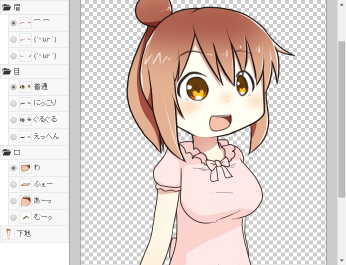
PSDTool は Photoshop 形式(*.psd) のファイルをブラウザで読み込んでレイヤーの表示／非表示を切り替えたり、合成された画像に名前を付けて保存したりできるツールです。
読み込む PSD ファイルはサーバーには一切送信されず完全にブラウザだけで処理されるため、プライベートな用途にも使用できます。
このツールは「イラストを描く人がレイヤーの表示／非表示を切り替えた様々なパターンを PNG で書き出したものを配布する」といった時間の浪費と手間を減らすために、 また配布されているイラストを利用したい人がソフトウェアを何も用意しなくても最新のブラウザさえあれば PSD ファイルを扱えるようにすることを目的に作りました。
Photoshop 形式は sai、CLIP STUDIO PAINT、openCanvas、Krita、メディバンペイント、FireAlpaca など様々なペイントソフトで保存可能な共通の保存フォーマットです。
これを機に、是非 Photoshop 形式での配布を検討してみてください。
PSDTool 紹介用動画
PSDTool の使い方を紹介する動画があります。
 立ち絵支援ツール PSDTool の使い方
立ち絵支援ツール PSDTool の使い方
動作環境
Microsoft Edge / Google Chrome / Mozilla Firefox 上でブラウザ画面サイズ 1024x600 以上を基準に動作確認しています。
Mac を持っていないので Apple Safari ではテストしていません。
ブラウザは常に最新版をお使いください。
Chrome で絵が出なくなったりする場合
chrome://flags/ をブラウザで開いて「アクセラレーションによる 2D キャンバス表示」を無効にしてみてください。
この設定によって症状が改善される場合があります。
機能の説明
ファイルを開く前のオプション
ファイルを開く際に、いくつかのオプションが設定可能です。
- 自動トリミング
-
自動トリミングを有効にすると PSD ファイルに存在する全てのレイヤーを表示したとしても使われることがない、完全な余白のみを削ります。
ある瞬間に表示している内容でトリミングするわけではないので、「ウサギの耳」「翼」のように一部または全部の方向へ突出するようなレイヤーが存在する場合、その分の余白は常に確保されます。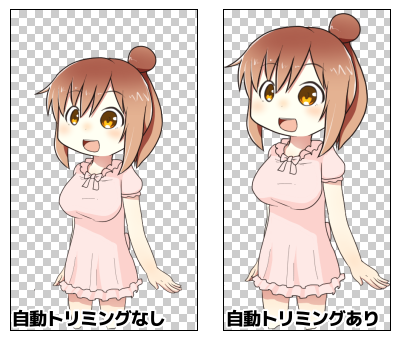
上記サンプルでは、自動トリミングありの場合は左右はギリギリまでカットされ、上部は「左向き用・主線」レイヤーを表示するための余白が数ピクセルだけ残っています。
なお縮小する場合、縮小後のサイズを例えば 320px としても上記サンプルのように余白の有無によって画像の縮小率が変わってきます。 余白を上手く使って複数の PSD ファイル間で同程度のサイズ感になるよう整えられている場合などもあるため、自動トリミングの使用には注意が必要です。
- 独自拡張機能を無効化
-
独自拡張機能を無効化は PSDTool での使用を想定していない PSD ファイルを読む際に使う機能で、PSDTool が持つ独自拡張機能 が認識されないようにします。 レイヤー名が独自拡張機能と衝突してしまい、レイヤー表示切替のチェックボックスがラジオボタンになったり消えてしまっている場合に有用です。
メイン画面
ファイルを開くと画面には以下の様なインターフェイスが現れます。
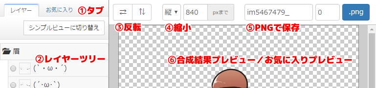
- 1. タブ
- 2. レイヤーツリー
-
タブで「レイヤー」が選ばれている時はレイヤーツリー画面 / シンプルビュー画面、「お気に入り」が選ばれている時はお気に入り編集画面が表示されます。
- 3. 反転
-
⇄ を押すと左右、⇅ を押すと上下に画像を反転します。文字やアクセサリー、髪型や服の装飾などのように、反転すると問題がある場合もあるため使用には注意が必要ですが、PSD ファイル側で独自拡張機能を使って対策されている場合は正しく表示される場合もあります。
- 4. 縮小
-
読み込んだ画像が大きすぎる場合、ここで保存前に縮小することができます。 縦か横のどちらかの最大ピクセル数を指定すると、その大きさを超えないように必要に応じて縮小されます。この設定によって元のサイズより画像が拡大されることはありません。
- 5. PNG で保存
-
画像を通し番号付きで保存するための機能です。 スクリーンショットのように入力欄がそれぞれ「im5467479_」「0」の状態で「.png」ボタンを押すと「im5467479_0000.png」というファイル名で保存され、そのまま同じボタンを押す度に数字が足されていきます。
数字の入力欄を空欄にすることで、通し番号が付かない、ただの画像保存ボタンとしても利用可能です。
- 6. 合成結果プレビュー / お気に入りプレビュー
-
合成結果プレビューには現在のレイヤー選択状態が表示されます。
また、お気に入りを選択した時は一時的にお気に入りの内容を表示するお気に入りプレビューに変化します。 お気に入りプレビューモードはレイヤータブに切り替えたりすることで解除されます。
レイヤーツリー画面 / シンプルビュー画面
タブで「レイヤー」を選ぶとレイヤー表示構成の切り替えができるレイヤーツリー画面またはシンプルビュー画面が表示されます。
シンプルビュー画面を使うためにはお気に入りを適切に組み立てる必要があり、使用できない状態の時は「シンプルビューに切り替え」ボタンも表示されません。
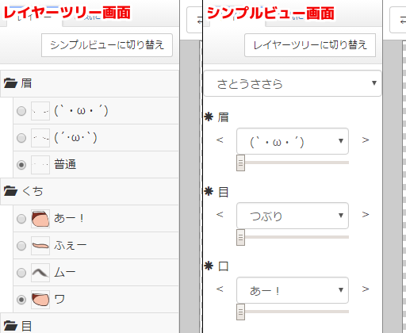
レイヤーツリー画面ではチェックボックスやラジオボタンの切り替えで、シンプルビュー画面ではセレクトボックスやスライダーによる切り替えによって、画像のレイヤー表示構成を変更することができます。
お気に入り編集画面
タブで「お気に入り」を選ぶとレイヤー表示構成の保存や読み込みができるお気に入り編集画面が表示されます。
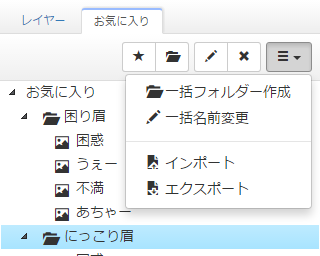
作成したお気に入りはシングルクリックでプレビュー、ダブルクリックでレイヤー一覧に読み込むことができます。その他、Shift や Ctrl(Option) を押しながらクリックで複数選択や、ドラッグで項目の入れ替え、Ctrl(Option) を押しながらドラッグでコピーなどもできます。
- 現在のレイヤー表示をお気に入りに追加（Ctrl + B / Option + B）
-
現在レイヤータブで選択している構成をお気に入りに追加します。
ショートカットキーを使用するとレイヤータブを表示していてもお気に入りに追加することができます。
- 新規フォルダー（Ctrl + D / Option + D）
-
項目の整理に利用可能なフォルダーを追加します。
- 名前の変更（F2）
-
項目の名前を変更します。
- 削除
-
項目を削除します。削除の際には確認ダイアログはなく、元に戻す手段も用意されていないので気をつけて使用する必要があります。
- → 一括フォルダー作成
-
複数のフォルダーを一気に作成するための機能です。フォルダー名を改行で区切って入力することで、効率的に複数のフォルダーを作成することができます。
- → 一括名前変更
-
お気に入りの項目の名前を効率的に変更するための機能です。変更したい項目が複数ある場合、こちらを使うことで作業効率が改善されるかもしれません。
入力欄を空欄にして名前の変更をすると自動的に連続した番号で埋めていく機能もあり、ダイアログの下に桁数や開始番号を指定する設定項目があります。
- → シンプルビュー設定
-
シンプルビューに関する設定項目があるダイアログが表示されます。
- シンプルビューが使えるお気に入りデータを読み込んだ時の動作
-
お気に入りを読み込んだ時に、シンプルビューが使える場合に振る舞いを変えることができます。
- → インポート
-
選ぶとダイアログが表示されます。
- PFV ファイルをインポート
-
選択された PFV ファイルを読み込みます。
このダイアログを開かなくても、PSD ファイルを開く際に PFV ファイルも一緒にドラッグ＆ドロップしたり、お気に入りタブ内のお気に入りツリーに PFV ファイルをドラッグ＆ドロップすることで読み込むこともできます。できますが、マニュアルを読まない人は恐らく PFV ファイルを開くためにインポート内を探しに来ると思ったので、ここにも用意してある、というわけなんですよ。
- 最近使ったお気に入りからインポート
-
ブラウザに自動保存されたお気に入りからインポートします。手動でインポートしなくても PSD ファイルを読み込んだ時に、読むべき PFV ファイルが特になければこの中からひとつ自動的に読み込まれます。
青い項目は同じ画像から作成されたお気に入りで、読み込んで利用できることが期待できます。
白い項目は読み込んでも画像のレイヤー構造の違いにより利用できない可能性もありますが、PFV ファイルにエクスポートし直すことはできます。ここに現れるデータはブラウザのデータ削除などにより意図しないタイミングで読めなくなる可能性があるため、重要なデータは別途保存しておくことを推奨します。
- → エクスポート
-
選ぶとダイアログが表示されます。
- PFV ファイルをエクスポート
-
お気に入りの情報を PFV(Psdtool FaVorites) ファイルに書き出します。
書き出した PFV ファイルはあとで自分でインポートして使用したり、PFV ファイルを配布して他人に利用してもらうこともできます。
また PFV ファイルは UTF-8 のテキストファイルなので、テキストエディタで開いて直接編集することもできます。
PSD ファイル / PFV ファイル / テキストファイルの3つを ZIP ファイルに入れておき、解凍せずに直接 PSDTool で開くと全てを読み込むことができます。
この仕組みにより、ZIP ファイルを PSDTool で読み込むだけでおすすめのレイヤー表示構成を最初からお気に入りに読み込んだ状態にもできます。 - 画像を ZIP ファイルでエクスポート
-
お気に入りのすべての項目を PNG ファイルで ZIP ファイルに書き出すことができます。 書き出す際には現在の反転や縮小の設定が適用されます。
ZIP ファイルには PFV ファイルも一緒に書き出されており、これを読み込むことで左右反転や縮小率を変えて書き出し直したり、お気に入りに更に項目を追加したい場合などにも利用できます。
処理速度を確保するため ZIP ファイルは無圧縮で作成されます。 もし ZIP ファイルで書き出し可能な容量やファイル数を超過する場合は、自動的に ZIP64 フォーマットで書き出されます。
なお、この項目は右端の ▼ をクリックすることで更に詳細な書き出しオプションを選ぶことができます。
- フィルタリングされた項目は残ったパーツのみを出力
-
通常のエクスポートではフィルタリングされたお気に入りは「お気に入りプレビュー」で表示される内容と同じもの（つまり「レイヤータブの選択状態」＋「フィルタリングされたお気に入りの内容」）を出力しますが、こちらからエクスポートした場合は「フィルタリングされたお気に入りの内容」のみを出力します。
そのため、例えば目のパーツ以外をフィルタリングしているお気に入りは目のパーツのみが画像として出力されます。
- シンプルビューの全パターンを ZIP ファイルでエクスポート
-
シンプルビューの組み合わせで表現可能な全ての構成を PNG ファイルで ZIP ファイルに書き出すことができます。書き出す際には現在の反転や縮小の設定が適用されます。
ただし、「目」を変えるためのセレクトボックスが複数ある場合のように、全てのスライダーが同じ位置にあっても最後に触った項目によって結果が異なるような構成は正しく出力されません。
処理速度を確保するため ZIP ファイルは無圧縮で作成されます。 もし ZIP ファイルで書き出し可能な容量やファイル数を超過する場合は、自動的に ZIP64 フォーマットで書き出されます。
このボタンを押す場合はサブメニューから書き出し構造を選択する必要があります。
- パーツ名あり / 入れ子
- 例: キャラ名\眉-困り\目-にっこり\口-笑い.png
- パーツ名あり / フラット
- 例: キャラ名_眉-困り_目-にっこり_口-笑い.png
- パーツ名なし / 入れ子
- 例: キャラ名\困り\にっこり\笑い.png
- パーツ名なし / フラット
- 例: キャラ名_困り_にっこり_笑い.png
- レイヤー構造をテキストファイルでエクスポート
-
PSD ファイルのレイヤー構造をタブで整形された文字コード UTF-8 改行コード '\n' のテキストファイルとして、概ね以下の様な形で出力します。
!眉 *(`・ω・´) *(´･ω･`) *普通 !くち *あー！ *ふぇー *ムー *ワ !目 *つぶり *ぐるぐる *にっこり *通常 !下地 *左向き用・主線 *右向き用・主線
レイヤー名をテキストでコピーしたい場合など、レアケースで役に立ちます。
- ラジオグループからお気に入りを自動生成（Shift + Ctrl + G / Shift + Option + G）
-
これはレイヤー一覧でラジオボタンをクリックした後にショートカットキーを押すことで使用可能な機能で、ラジオボタンで選択可能な項目の全てのパターンでお気に入りを自動生成します。
フィルター編集画面
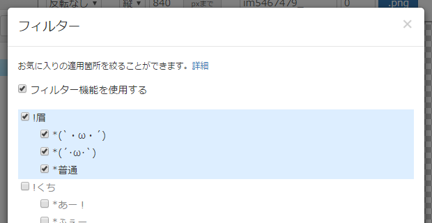
お気に入りで作成したフォルダーをダブルクリックすると、フィルター設定画面が現れます。
フィルター機能を有効にすると、お気に入りを読み込む際に現在のレイヤー表示に対しお気に入りを一部にだけ適用することができるようになります。
フィルター機能が有効になっているフォルダーはアイコンが から に変わり、そのフォルダー以下にあるお気に入りはチェックが入っているレイヤーの項目だけを読み込むように変わります。
使用例
上記の例では元々は眉、目、口がそれぞれ異なるお気に入りが、フィルターを指定することにより口だけの変化に変わる様子を示しています。
また、口以外は元々の状態を維持しようとするため、レイヤー一覧で他のパーツを変更すればその状態から口だけを変更をすることができます。
この例の場合は直接口レイヤーを切り替えることと本質的な違いがありませんが、例えば複数のパーツの切り替えが必要な服装や、口だけではなく表情全体など大きな単位でフィルターを有効にすると、現在の服装やポーズを維持したまま表情だけをお気に入りから読み込むような使い方ができます。
シンプルビュー
シンプルビューはレイヤーツリーでチェックボックスやラジオボタンを操作する代わりに、セレクトボックスやスライダーから項目を選んで組み合わせられる画面です。シンプルビューを有効化するためには、お気に入りにシンプルビュー用の項目を作成する必要があります。
シンプルビューを有効化する方法
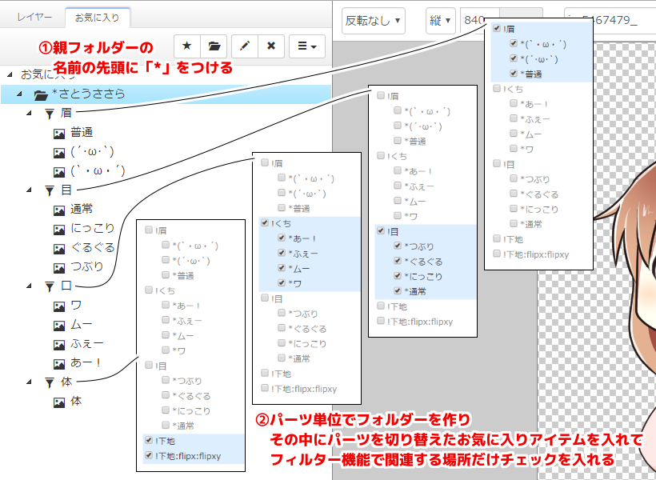
- 1. シンプルビューの起点となる親のフォルダーの名前の先頭に「*」半角アスタリスクをつける
-
このフォルダーの中がシンプルビュー表示用であることを指定します。
- 2. フィルター機能を使ってパーツ単位でお気に入りをまとめる
-
フォルダーを作り、その中にパーツを切り替えたお気に入りを一つ以上作成して、そのフォルダーでフィルター機能を有効化します。フィルター機能を有効化していない場合、シンプルビューの選択肢として現れません。
お気に入りの登録順はそのまま選択項目の順番として使用されます。また、選択項目内で一番上にある項目は一番最初にシンプルビューを開いた時のデフォルト項目として使用されます。
必要であればフォルダーはもっと階層を深くすることもできますが、深くなると利用する時の手間が増える可能性もあります。
- 3. レイヤータブに画面を切り替える
-
1 の手順が完了した時点で、レイヤータブに切り替えると「シンプルビューに切り替え」のボタンが表示されるようになります。
2 の手順が完了していれば、作成した項目がシンプルビューでの選択項目として現れるようになります。
なお、お気に入りを１つしか入れていないフォルダーがある場合、その項目はシンプルビュー上で変更できないためグレーアウト状態で表示されます。
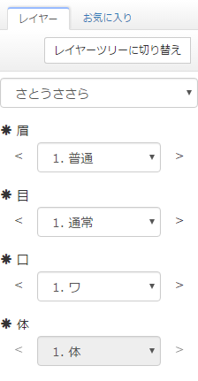
これが上記サンプルで作成したお気に入りのシンプルビュー表示例です。それぞれの各項目の一番上にあったものがデフォルトの表示項目として表示され、「体」に関してはお気に入りがひとつしか登録されていないためグレーアウトされています。
お気に入り内にシンプルビュー用の親フォルダーが複数ある場合、一番上の選択項目で選んで切り替えることができるようになります。
使用例
実際にシンプルビュー用のお気に入りデータを作成する例です。お気に入りデータの登録にはラジオグループからお気に入りを自動生成を使用していますが、使用しなくてもデータの作成は可能です。
読み込める PSD ファイル
PSDTool は「最大公約数的な PSD ファイル読み込みツール」というのを目標に開発しているため、Photoshop 以外のソフトでも頻繁に使われるであろう機能を優先的に実装しています。
- カラーモードは「RGB カラー（8bit/チャンネル）」にのみ対応しています。
- グループレイヤー（フォルダーレイヤー）に対応しています。
- クリッピングマスク、レイヤーマスクに対応しています。
-
レイヤーの合成モードは以下のものに対応しています。
- 通過（グループレイヤーのみ）
- 通常
- 比較（暗）
- 乗算
- 焼き込みカラー
- 焼き込み（リニア）
- カラー比較（暗）
- 比較（明）
- スクリーン
- 覆い焼きカラー
- 覆い焼き（リニア）
- カラー比較（明）
- オーバーレイ
- ソフトライト
- ハードライト
- ビビッドライト
- リニアライト
- ピンライト
- ハードミックス
- 差の絶対値
- 除外
- 減算
- 除算
- 色相
- 彩度
- カラー
- 輝度
- テキストレイヤー、調整レイヤー、シェイプレイヤーなどには対応していません。
ZIP ファイルの読み込み
ZIP ファイルに格納されている PSD ファイルは、ファイルを取り出さずにそのまま開くことができます。
- 複数の PSD ファイルが ZIP ファイル内に存在する場合、最初に見つかったものが読み込まれます。
-
PFV ファイルが ZIP ファイル内に存在する場合、自動的にお気に入りに読み込まれます。
ただし、その PFV ファイルより更新日時が新しいお気に入りデータがブラウザに保存されているときは、ブラウザのものが優先されます。 -
テキストファイルが ZIP ファイル内に存在する場合、レイヤー一覧の一番上にテキストファイル表示用のボタンが現れます。
シンプルビューが使えるお気に入りデータが一緒に読み込まれている場合はテキストを自動的に表示することもできます。
ダイレクト読み込み
以下に示す条件のいずれかを満たすことで、PSDTool はあなたのサイトにあるファイルを読むことができます。
あなたのサイトに配置された配布用の ZIP ファイルをこの仕組みで直接開くこともできます。
-
読み込むファイルを置くサーバと同じドメイン上に HTML ファイルを設置し、その HTML をブラウザで表示可能なこと。
- これは自作の HTML ファイルが設置できるサービスの多くで使用可能な、簡単な導入方法です。
- 以下の手順に従いアップロードした HTML ファイルをブラウザで開くと、ダイレクト読み込みで使用可能なリンクが表示されます。
- HTML ファイル をダウンロード（右クリック保存）
- HTML ファイルをテキストエディタで開き、設定を記入
- 読み込むファイルと同じサーバにアップロード
-
読みたいファイルの HTTP レスポンスのヘッダで Access-Control-Allow-Origin の値に「https://oov.github.io」「http://oov.github.io」「*」などが含まれていること。
- これは主にレンタルサーバーで .htaccess や PHP などのスクリプトを使える環境の場合などに使用可能な方法です。
- 設定方法については「Access-Control-Allow-Origin htaccess」などで検索してください。
-
適切に設置できている場合 "https://oov.github.io/psdtool/#load:" + encodeURIComponent(設置URL) のアドレスで読み込むことができます。
読み込みたいファイルの配置場所が https ではなく http の場合、PSDTool の URL も http にする必要があります。
独自拡張機能
PSD ファイルを作る際にレイヤー名に特定の記号を付けることで、レイヤーの表示／非表示の使い勝手を改善することができます。
これらの機能を使用しても画像編集ソフトで開く際には今まで通り使用でき、編集が不便になることはありません。
また、PSDTool で読み込む場合でもオプションから独自拡張機能を無効化することで、一般的なソフトと同じ状態で読み込むこともできます。
ラジオボタン化「*」
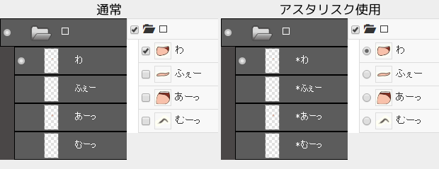
レイヤー名の先頭に半角のアスタリスク「*」をつけると、選択項目がチェックボックスではなくラジオボタンになります。
ラジオボタンは親のグループレイヤー（画像例では「口」）に所属するようになります。
- グループ内でひとつのみ選択できるため、二種類の表情が同時に表示されたりするのを防ぐことができます。
- 項目を選択すると前に選択されていた項目の選択解除も行われるため、切り替えのクリック数が半分で済みます。
- ラジオボタンは選択解除できませんが、親のグループレイヤーで非表示にもできます。
- 最後にクリックしたラジオボタンはキーボードの上下キーで選択を切り替えることもできます。
ラジオボタン内のレイヤーが複数表示されたまま PSD ファイルが保存されていた場合、その中で一番上のものがデフォルト表示されます。
強制表示化「!」
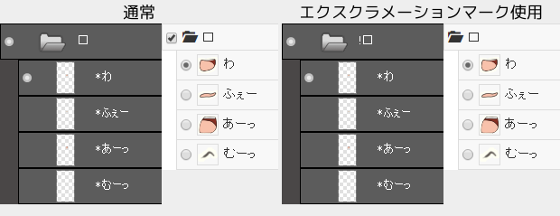
レイヤー名の先頭に半角のエクスクラメーションマーク「!」をつけると、選択項目からチェックボックスが消えます。
チェックボックスがない項目は表示状態になり、非表示にできなくなります。
- 必須のパーツが外れるのを防ぐことができます。
- 選択項目を減らせるので、使う時に迷う要素を画面から減らすことができます。
- ユーザーの操作で非表示にはできませんが、ZIP エクスポート機能や反転表示機能などで非表示にされることはあります。
強制表示設定にしたレイヤーを非表示にして PSD ファイルを保存しても、PSDTool で表示する際は強制的に表示状態になります。
反転レイヤー指定「:flipx」「:flipy」「:flipxy」
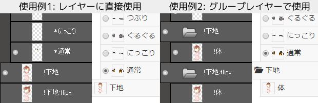
レイヤー名の最後に「:flipx」「:flipy」「:flipxy」のいずれかをつけると、そのレイヤーはそれぞれ左右反転、上下反転、上下左右反転をしている時にだけ使用するレイヤーとして扱われます。同じ階層内に「通常表示用のレイヤー」と「反転表示用のレイヤー」の２つのレイヤーを用意し、その名前を「通常用の名前」「通常用の名前:flipx」のようにすることで、この機能が有効化されます。
例えば「体」というレイヤーを「通常用」と「左右反転用」の2種類用意する場合、それぞれの名前を「体」「体:flipx」などのようにしておきます。正しく設定すると PSDTool で読み込んだ時にレイヤー一覧から「体:flipx」が消え、「体」レイヤーを表示している状態で左右反転すると「体:flipx」の内容で自動的に表示されます。
この機能はグループレイヤーで使うこともできますが、グループレイヤーで使う場合は「通常用のグループレイヤー」と「反転表示用のグループレイヤー」の中に含まれる子レイヤーの名前を完全に一致させておく必要があります。 一致していないレイヤーがある場合、その場所は正しく反転が適用されません。
- 文字や襟など反転されるべきではない要素に対して柔軟に対処できます。
- 「体:flipx:flipy」のように、左右反転と上下反転で同じレイヤーを使う、という使い方もできます。
- PSDTool のトップページから開くことができるサンプルは、この機能を利用して髪の結び目が切り替わるようになっています。
PFV ファイルについて
PFV ファイルは PSDTool で登録したお気に入りの情報が格納された PSDTool 独自のファイル形式です。
ファイルの実態は BOM なし UTF-8、改行コード '\n' のテキストファイルで、概ね以下の構造になっています。
[PSDToolFavorites-v1] root-name/お気に入り //フォルダー名/お気に入り登録名 グループ1/レイヤー1 グループ2/*グループ3 //フォルダー名/空フォルダ~folder
まず固定のヘッダーとして必ずファイルの先頭から [PSDToolFavorites-v1] が現れ、行頭に // が現れるまではファイル全体に対する設定が続きます。// が現れたあとは次の // が現れるまでがそのお気に入りの設定です。
日本語で書かれている箇所は実際にはそれぞれが以下の JavaScript で示す URL エンコードの亜種によりエンコードされています。 テキストエディタによる編集を容易にするためエンコードされる文字種は絞られていますが、デコードには通常の URL デコーダーが使用できます。
function encode(s) {
return s.replace(/[\x00-\x1f\x22\x25\x27\x2f\x5c\x7e\x7f]/g, function(m) {
return '%' + ('0' + m[0].charCodeAt(0).toString(16)).slice(-2);
});
}
ブックマーク内に空フォルダーがある場合にはそれを示すために // から始まる識別子は更に後ろに ~folder が付与される場合があります。
また、フィルターが有効になっているフォルダーがある場合は同じように ~filter が付与され、通常のお気に入りと同じ形式でフィルタリングしない項目が列挙されます。
例えば //グループ1/レイヤー1 を解析して階層ごとに取得したい場合、まず先頭2文字を捨ててから ~ の有無を検索し、ある場合はまず ~ で分割し、後ろが folder など既知の識別子であるか確認し、未知の識別子の場合は次の // まで読み飛ばすようにしてください。これを怠ると将来識別子が追加された際に正しく処理できなくなる可能性があります（やってても互換性が維持できるかはわかりませんが…）。
root-name にはお気に入りツリーの一番上の名前が保存されています。
レイヤー構造に関するデータは レイヤー1/レイヤー2/レイヤー3 のような形になっていて、この場合だと「レイヤー1」「レイヤー2」「レイヤー3」全てにチェックが入っていることを示しています。また、それぞれのレイヤー名は上記の同じ URL エンコードの亜種によりエンコードされています。
しかし稀に レイヤー1/レイヤー2\1/レイヤー3 のように \ バックスラッシュ（円記号）と数字が入っていることがあり、これは PSD ファイルで同じレイヤーの階層に同じ名前のレイヤーが複数あることを示しています。\ の後ろの数字はレイヤーの重ねあわせ順で、下から 0 から始まるインデックスで付与されていますが、0 の場合は省略されます。
この例の場合だと、レイヤー1 の子階層に レイヤー2 という名前のレイヤーが複数あり、レイヤー2\1 は下から数えて２番めの レイヤー2 です。
レイヤー名自体に \ が含まれている場合はエンコードによって %5c になっているため、\ の存在はデコード処理の前にチェックすることで見つけることができます。
変更履歴
- 2016-05-01
- ショートカットキーからのお気に入り追加での名前のデフォルト値を最後にチェックを入れたレイヤーの名前に変更
- 上下反転、左右反転で必要になるクリック数を削減
- ZIP エクスポート機能で 4GB 以上のアーカイブは ZIP64 で書き出すように改善
- シンプルビューの全パターンエクスポート機能を実装
- バグ修正
- 2016-04-26
- 動画へのリンクを追加
- 2016-04-25
- 文字コード検出処理を変更
- 2016-04-22
- バグ修正
- 2016-04-19
- Chrome 50 で起こる問題を回避
- 2016-04-09
- 反転時に自動でレイヤーを切り替える独自拡張機能を追加
- シンプルビュー機能を追加
- デザインの調整
- 操作性の改善
- 2016-04-08
- 操作性の改善
- 2016-04-04
- バグ修正
- 2016-04-01
- バグ修正
- 操作性の改善
- 書き出しオプションの追加
- 2016-03-31
- 同じ階層に同じ名前のレイヤーが複数ある場合にお気に入りが使用できなかったのを修正
- フィルター機能を追加
- 2016-03-22
- バグ修正
- 2016-03-21
- お気に入りの ZIP エクスポート機能で 500MB の容量上限を撤廃
- 2016-03-18
- バグ修正
- 2016-03-17
- バグ修正
- 2016-03-16
- ファイル読み込みとキャンバス作成を並列化
- 2016-03-10
- バグ修正
- 2016-03-06
- お気に入り機能を追加
- 連番ダウンロードで番号の省略を可能にした
- デザインの調整
- ドキュメントを整理
- 左カラムの幅をドラッグで変えられるように
- 縮小と連番ダウンロードに全角数字を入れても認識するように
- 巨大な ZIP ファイル（1GB以上）からの読み込みに対応
- 2016-02-18
- オプション「自動トリミング」「独自機能を無効化」を追加
- 2016-02-17
- 操作性の改善
- バグ修正
- 2016-02-15
- バグ修正
- 2016-02-07
- バグ修正
- 2016-02-06
- 縮小のサイズ計算が誤っていたのを修正
- ZIP ファイルを開いた時はテキストファイルを表示できる機能を追加
- ダイレクト読み込み機能を追加
- 2016-02-05
- ZIP 圧縮された PSD ファイルの読み込みに対応
- 2016-02-04
- 合成モード「通過（グループレイヤーのみ）」「通常」「比較（暗）」「乗算」「焼き込みカラー」「焼き込み（リニア）」「カラー比較（暗）」「比較（明）」「スクリーン」「覆い焼きカラー」「覆い焼き（リニア）」「カラー比較（明）」「オーバーレイ」「ソフトライト」「ハードライト」「ビビッドライト」「リニアライト」「ピンライト」「ハードミックス」「差の絶対値」「除外」「減算」「除算」「色相」「彩度」「カラー」「輝度」の実装を追加
- 2016-02-02
- 操作性の改善
- 2016-02-01
- 描画負荷の軽減
- 縮小処理中にUIが硬直しないように
- 2016-01-29
- 透過領域でアニメーション
- 縮小機能を追加
- 連番ダウンロード機能を追加
- バグ修正
- 2016-01-28
- 合成モード「覆い焼き（リニア）」に対応
- レイヤーマスク、ベクトルマスクに対応
- バグ修正
- 2016-01-26
- クリッピングマスクに対応
- 読み込み状況の進捗表示
- バグ修正
- 2016-01-22
- 初版